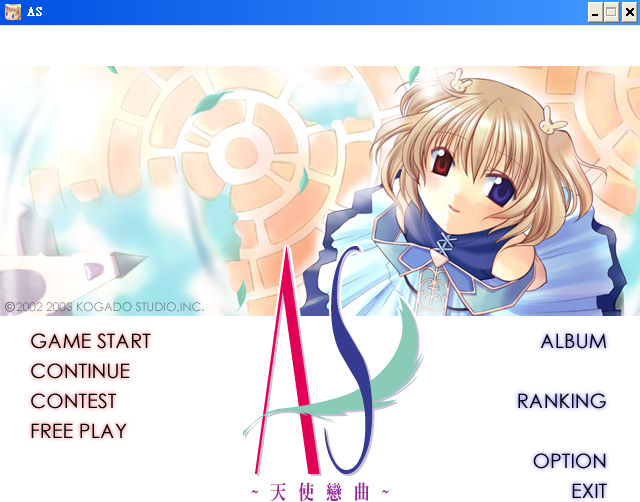

名稱：天使戀曲／天使夜曲續集 (Angel Symphony，中文版)
簡介：工畫堂2003年出品的戀愛劇情冒險音樂演奏遊戲，為「天使小夜曲」」的加強版，2004
年由光譜中文化並代理發行 [待補]。

保護：光碟SecuROM 5.03
檔案：AS2_patch04.rar = 更新檔
nocd11013.rar = 免光碟檔
操作：Ctrl = 快速略過對話
說明：遊戲由玩家每天的活動與事件來決定各人物的好感度，並在特定的日期進行演奏。